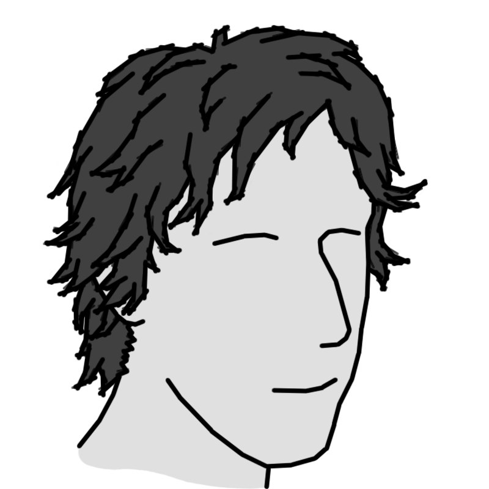

A SIMPLE BLOG
A Simple Guy
SENIOR SOFTWARE DEVELOPER | C++, C#, PYTHON
I'm Trevor Wilson. I'm a senior software developer currently working on cloud services in the IOT and real-time information management industry. Before that, I've worked with image processing and high-frequency trading software.
I believe that in any system each layer of abstraction is important. I'm very detail-oriented and enjoy working on applications and building APIs to ensure that every component is performant and correct. I put effort in to understanding how stuff works so that I can best develop with those considerations in mind. Throughout my career, I've architected multi-service cloud infrastructure, twiddled with x86 assembly, and everything in-between. Though I can work at any level in a variety of languages, my passion is high-performance processing, low-level data management, and API design.
If you wish to contact me, I can be reached via email or Twitter.
Coolfire Solutions
JULY 2016 - PRESENT | SENIOR SOFTWARE ENGINEER
Coolfire Solutions provides a platform for augmenting existing systems and IOT networks with situational awareness.
As a senior software engineer, I lead a team of developers building the foundational cloud-based services that interface with existing systems to provide situational awareness. I architected the server-side APIs for use by widely varying client platforms and built the core functionality to facilitate realtime-capable workflows. I primarily work with Typescript and C#, but interacted heavily with iOS (Objective-C and Swift), Android (Java and Kotlin), browsers, databases (MongoDB and Redis) and many cloud service technologies (such as Docker and Kubernetes).
Exegy
MAY 2015 - JUNE 2016 | PERFORMANCE ENGINEER
Exegy creates a server hardware and software platform for normalizing stock market transactions for the high-frequency trading industry.
As a performance engineer, I helped analyze and assess the performance characteristics of the system under different configurations. I personally managed ~$250,000 of servers under production conditions for testing not-yet-released features to protect against unexpected performance changes. I primarily worked with C++ and Python, but interacted heavily with unix systems and various server management technologies.
Stoecker and Associates
FEBRUARY 2013 - MAY 2015 | ASSOCIATE SOFTWARE DEVELOPER
Stoecker and Associates is a dermatology center that worked with the MS&T image processing lab to develop algorithms that detect skin conditions.
As an associate software developer, I created C++ programs based on MATLAB scripts to achieve the same results much faster using OpenCV and OpenMP.
Missouri S&T
AUGUST 2011 - MAY 2015 | COMPUTER SCIENCE

I graduated with a computer science degree from the Missouri University of Science and Technology.
- I worked with a fellow engineering student in the undergraduate research program and received 2nd place when delivering final presentations.
- I was part of a team that placed 4th in an ICPC regional competition.
- I also participated in ACM events, particularly developing and competing in SIG-GAME competitions.